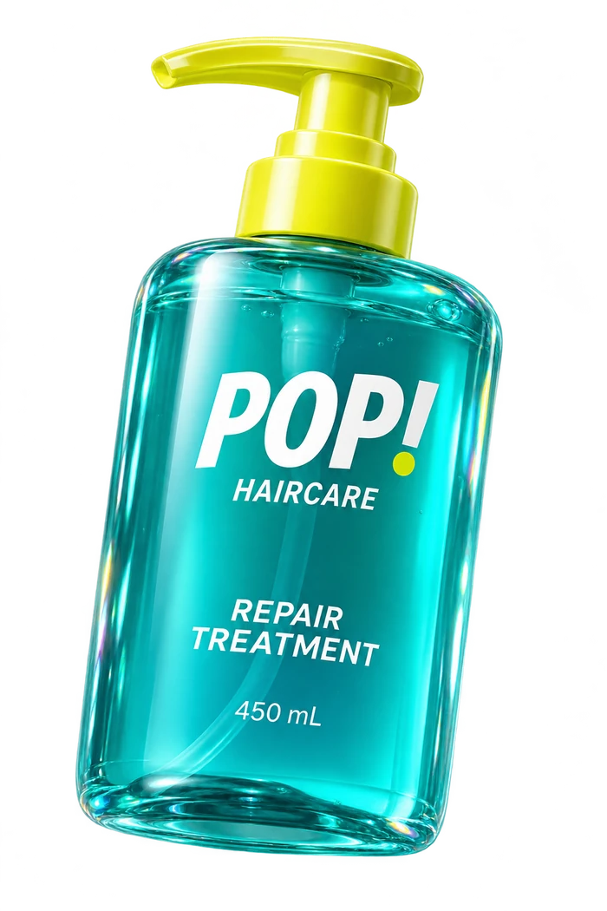
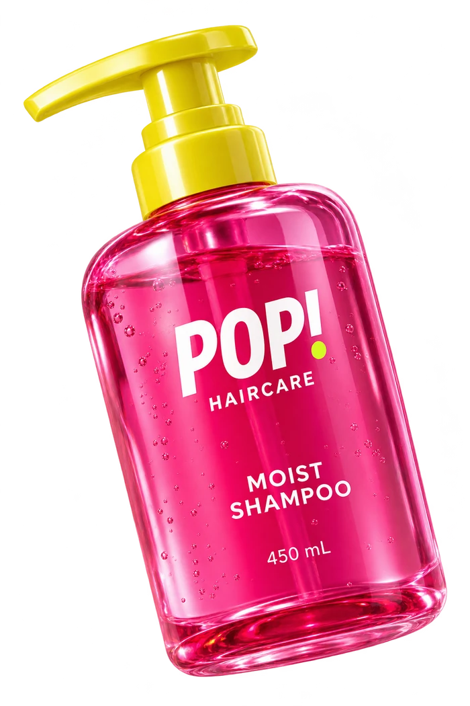

✳


POP! NOT YOUR BORING HAIR DAY.SCROLL TO FEEL GOOD ↓
MORE SHINE ✳ MORE FUN ✳ MORE YOU ✳ MORE SHINE ✳ MORE FUN ✳ MORE YOU ✳
01 / THE VIBE✷
YOUR HAIR
HAS PERSONALITY.
LET IT SHOW.
「ちゃんとしなきゃ」なんて、今日はお休み。
まとまりも、ツヤも、自由なスタイルも。
髪を楽しむための、毎日の新習慣。
GOOD HAIR
GOOD ENERGY
✳02 / THE GOOD STUFF
THE
POWER DUO.
毎日使いたくなる、
ごきげんな2ステップ。
01 / CLEANSE✳
THE DAILY
SHAMPOO
軽やかに洗って、気分までリフレッシュ。
✳
THE REPAIR
TREATMENT
毛先までなめらかに、心地よい指通りへ。
※ 架空ブランドの自主制作デモです。商品・効果・販売情報は実在しません。
A LITTLE EXTRA IS A GOOD THINGBE
TOO
MUCH.
目立っていい。自由でいい。
あなたの「好き」を、髪から。
✺03 / EASY DOES IT
2 STEPS.
ALL YOU.
いつものバスタイムを、
ちょっと楽しい時間に。
01WASH IT.
シャンプーで髪と頭皮をやさしく洗う。
↗02REPAIR IT.
トリートメントで毛先までなめらかに整える。
↗ READY TO TURN IT UP?MAKE
HAIR FUN.
EXPLORE THE DUO ↗これはポートフォリオ用の架空ブランドです。購入・問い合わせはできません。